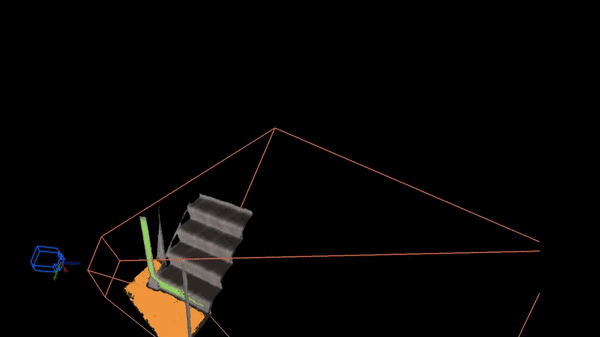

Research at Imperial College London
I did my PhD in Robotic Vision at Imperial College London from 2010-2014 under the supervision of Prof. Andrew Davison and Prof. Paul H J Kelly. My research was focused on lifting representations from keypoints to object-level during Simultaneous Localization and Mapping (SLAM) with moving cameras.

SLAM++
R. F. Salas-Moreno, R. Newcombe, H. Strasdat, P. H. J. Kelly and A. J. Davison
We presented the major advantages of a new 'object oriented' 3D SLAM paradigm, which takes full advantage in the loop of prior knowledge that many scenes consist of repeated, domain-specific objects and structures. As a hand-held depth camera browses a cluttered scene, real-time 3D object recognition and tracking provides 6DoF camera-object constraints which feed into an explicit graph of objects, continually refined by efficient pose-graph optimisation. This offers the descriptive and predictive power of SLAM systems which perform dense surface reconstruction, but with a huge representation compression.
Dense Planar SLAM
R. F. Salas-Moreno, B. Glocker, P. H. J. Kelly and A. J. Davison
This was new real-time approach which densely maps an environment using bounded planes and surfels extracted from depth images. Our method offers the every-pixel descriptive power of the latest dense SLAM approaches, but takes advantage directly of the planarity of many parts of real-world scenes via a data-driven process to directly regularize planar regions and represent their accurate extent efficiently using an occupancy approach with on-line compression. Large areas can be mapped efficiently and with useful semantic planar structure which enables intuitive and useful AR applications such as using any wall or other planar surface in a scene to display user content.


Elastic Fusion
T. Whelan, R. F. Salas-Moreno, B. Glocker, A. J. Davison and S. Leutenegger
The Elastic Fusion system is capable of capturing comprehensive dense globally consistent surfel-based maps of room scale environments and beyond explored using an RGB-D camera in an incremental online fashion, without pose graph optimisation or any post-processing steps. This is accomplished by using dense frame-to-model camera tracking and windowed surfel-based fusion coupled with frequent model refinement through non-rigid surface deformations